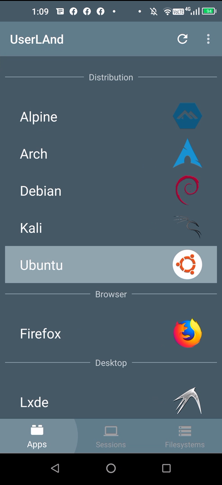
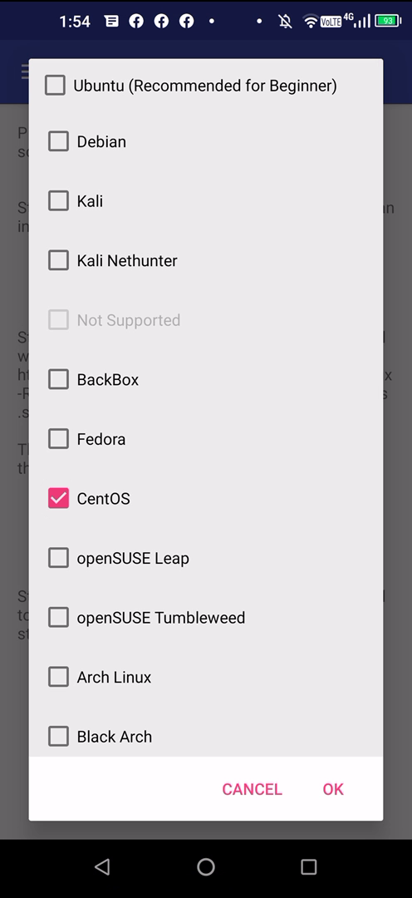
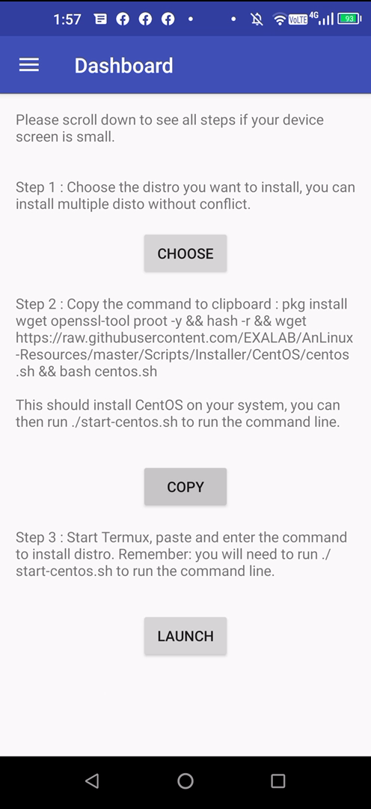
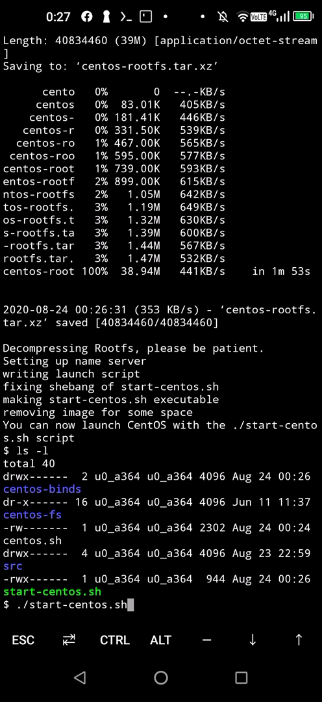

このブログの自宅サーバ化計画があるんですが、その候補マシンとして先日（といってもだいぶ前ですが）ThinkCentre M75q-1 Tinyを用意してあります。このマシン、かなり速くて自宅サーバ用途だけに使うのは勿体ないなーなんて思っています。実際、フォートナイト専用マシンとしてめっちゃ遊んでいます。Linuxを入れてもUnixBenchがスコアが6500を超える激速いマシンなんですよね。そこで、ダメ元でと思い最近スマホも変えたことですし、UmidigiF2にCentOSとかFedoraとか入れて使えないかなーって思ったわけです。
普通、AndroidスマホにLinuxを入れるにはrootを取得してオリジナルなOSをインストールするんですが、カスタムROMを作らないといけないのでメンテナンスが面倒なのとarmプラットフォームなんでマイナーなオープンソースソフトウェアはバイナリがないので、コンパイルしないとだめなんです。まぁ、くそメンドくさいので候補から外していたんですが、最近の事情はもっと気軽に入れられるようでした。上の画像のアプリ、UserLAndとか、Termuxとか、AnLinuxとかがそれです。UserLAndは、それ単体でディストリビューションが組み込めます。

この環境（UserLAndでUbuntu）で、計測したUnixBenchが以下です。スマートフォンはUmidigiF2です。CPUの型番や認識しているハードウェアは以下となります。
CPU MediaTek Helio P70
Hardware : MT6771V/CT
========================================================================
BYTE UNIX Benchmarks (Version 5.1.3)System: localhost: GNU/Linux
OS: GNU/Linux — 4.14.141+ — #1 SMP PREEMPT Wed May 6 10:13:36 CST 2020
Machine: aarch64 (aarch64)
Language: en_US.utf8 (charmap=”ANSI_X3.4-1968″, collate=”ANSI_X3.4-1968″)
; runlevel————————————————————————
Benchmark Run: Sat Aug 22 2020 20:54:06 – 21:22:31
8 CPUs in system; running 1 parallel copy of testsDhrystone 2 using register variables 17608983.7 lps (10.0 s, 7 samples)
Double-Precision Whetstone 2700.6 MWIPS (9.9 s, 7 samples)
Execl Throughput 277.4 lps (29.9 s, 2 samples)
File Copy 1024 bufsize 2000 maxblocks 244507.6 KBps (30.0 s, 2 samples)
File Copy 256 bufsize 500 maxblocks 71657.5 KBps (30.0 s, 2 samples)
File Copy 4096 bufsize 8000 maxblocks 676812.1 KBps (30.0 s, 2 samples)
Pipe Throughput 375078.4 lps (10.0 s, 7 samples)
Pipe-based Context Switching 73081.8 lps (10.0 s, 7 samples)
Process Creation 1843.0 lps (30.0 s, 2 samples)
Shell Scripts (1 concurrent) 973.9 lpm (60.0 s, 2 samples)
Shell Scripts (8 concurrent) 237.1 lpm (60.2 s, 2 samples)
System Call Overhead 21729.5 lps (10.0 s, 7 samples)System Benchmarks Index Values BASELINE RESULT INDEX
Dhrystone 2 using register variables 116700.0 17608983.7 1508.9
Double-Precision Whetstone 55.0 2700.6 491.0
Execl Throughput 43.0 277.4 64.5
File Copy 1024 bufsize 2000 maxblocks 3960.0 244507.6 617.4
File Copy 256 bufsize 500 maxblocks 1655.0 71657.5 433.0
File Copy 4096 bufsize 8000 maxblocks 5800.0 676812.1 1166.9
Pipe Throughput 12440.0 375078.4 301.5
Pipe-based Context Switching 4000.0 73081.8 182.7
Process Creation 126.0 1843.0 146.3
Shell Scripts (1 concurrent) 42.4 973.9 229.7
Shell Scripts (8 concurrent) 6.0 237.1 395.2
System Call Overhead 15000.0 21729.5 14.5
========
System Benchmarks Index Score 271.2————————————————————————
Benchmark Run: Sat Aug 22 2020 21:22:31 – 21:51:31
8 CPUs in system; running 8 parallel copies of testsDhrystone 2 using register variables 99917960.5 lps (10.0 s, 7 samples)
Double-Precision Whetstone 17134.8 MWIPS (9.5 s, 7 samples)
Execl Throughput 636.2 lps (29.9 s, 2 samples)
File Copy 1024 bufsize 2000 maxblocks 391896.0 KBps (30.0 s, 2 samples)
File Copy 256 bufsize 500 maxblocks 109010.1 KBps (30.0 s, 2 samples)
File Copy 4096 bufsize 8000 maxblocks 1128491.8 KBps (30.0 s, 2 samples)
Pipe Throughput 1996740.3 lps (10.0 s, 7 samples)
Pipe-based Context Switching 274427.3 lps (10.0 s, 7 samples)
Process Creation 5289.1 lps (30.0 s, 2 samples)
Shell Scripts (1 concurrent) 2014.1 lpm (60.3 s, 2 samples)
Shell Scripts (8 concurrent) 291.2 lpm (63.5 s, 2 samples)
System Call Overhead 27627.6 lps (10.1 s, 7 samples)System Benchmarks Index Values BASELINE RESULT INDEX
Dhrystone 2 using register variables 116700.0 99917960.5 8562.0
Double-Precision Whetstone 55.0 17134.8 3115.4
Execl Throughput 43.0 636.2 148.0
File Copy 1024 bufsize 2000 maxblocks 3960.0 391896.0 989.6
File Copy 256 bufsize 500 maxblocks 1655.0 109010.1 658.7
File Copy 4096 bufsize 8000 maxblocks 5800.0 1128491.8 1945.7
Pipe Throughput 12440.0 1996740.3 1605.1
Pipe-based Context Switching 4000.0 274427.3 686.1
Process Creation 126.0 5289.1 419.8
Shell Scripts (1 concurrent) 42.4 2014.1 475.0
Shell Scripts (8 concurrent) 6.0 291.2 485.3
System Call Overhead 15000.0 27627.6 18.4
========
System Benchmarks Index Score 680.3
やっぱりchrootしているので、ちょっとオーバーヘットがあるようですね。もっと速いはずなんですが、prootを使っているようなのでその影響でしょうか。prootっていうのは、FreeBSDのjailに似た感じだと思います。これは、ハイパーバイザや準仮想化マシンのようなセキュアなものとは仕組みが違います。
次、Termuxの場合は、以下のようになりました。動かしているスマホは先と同じUmidigiF2です。
pkg install vim -y
pkg install wget -y
pkg install clang -y
pkg install make -y
pkg install perl -y
pkg install git -y
pkg install pkg-config -ygit clone https://github.com/kdlucas/byte-unixbench
cd byte-unixbench/UnixBench
cp -p Makefile Makefile.org
vi Makefile
※以下部分を削除してね。（-march=native）
$ diff Makefile Makefile.org
98c98
< OPTON += -mtune=native
—
> OPTON += -march=native -mtune=native
./Run
::========================================================================
BYTE UNIX Benchmarks (Version 5.1.3)System: localhost: Android
OS: Android — 4.14.141+ — #1 SMP PREEMPT Wed May 6 10:13:36 CST 2020
Machine: aarch64 (unknown)
Language: en_US.utf8 (charmap=, collate=)
21:45:18 up 41 days, 12:17, load average: 26.55, 26.58, 26.57; runlevel————————————————————————
Benchmark Run: Sun Aug 23 2020 21:45:18 – 22:13:35
8 CPUs in system; running 1 parallel copy of testsDhrystone 2 using register variables 17334020.9 lps (10.0 s, 7 samples)
Double-Precision Whetstone 3658.8 MWIPS (9.9 s, 7 samples)
Execl Throughput 215.1 lps (29.9 s, 2 samples)
File Copy 1024 bufsize 2000 maxblocks 323431.8 KBps (30.0 s, 2 samples)
File Copy 256 bufsize 500 maxblocks 101368.1 KBps (30.0 s, 2 samples)
File Copy 4096 bufsize 8000 maxblocks 845384.2 KBps (30.0 s, 2 samples)
Pipe Throughput 591377.9 lps (10.0 s, 7 samples)
Pipe-based Context Switching 89414.5 lps (10.0 s, 7 samples)
Process Creation 1326.4 lps (30.0 s, 2 samples)
Shell Scripts (1 concurrent) 861.2 lpm (60.1 s, 2 samples)
Shell Scripts (8 concurrent) 381.1 lpm (60.1 s, 2 samples)
System Call Overhead 582221.0 lps (10.0 s, 7 samples)System Benchmarks Index Values BASELINE RESULT INDEX
Dhrystone 2 using register variables 116700.0 17334020.9 1485.3
Double-Precision Whetstone 55.0 3658.8 665.2
Execl Throughput 43.0 215.1 50.0
File Copy 1024 bufsize 2000 maxblocks 3960.0 323431.8 816.7
File Copy 256 bufsize 500 maxblocks 1655.0 101368.1 612.5
File Copy 4096 bufsize 8000 maxblocks 5800.0 845384.2 1457.6
Pipe Throughput 12440.0 591377.9 475.4
Pipe-based Context Switching 4000.0 89414.5 223.5
Process Creation 126.0 1326.4 105.3
Shell Scripts (1 concurrent) 42.4 861.2 203.1
Shell Scripts (8 concurrent) 6.0 381.1 635.1
System Call Overhead 15000.0 582221.0 388.1
========
System Benchmarks Index Score 406.2————————————————————————
Benchmark Run: Sun Aug 23 2020 22:13:35 – 22:42:10
8 CPUs in system; running 8 parallel copies of testsDhrystone 2 using register variables 92727287.0 lps (10.0 s, 7 samples)
Double-Precision Whetstone 23155.4 MWIPS (10.0 s, 7 samples)
Execl Throughput 1153.0 lps (29.7 s, 2 samples)
File Copy 1024 bufsize 2000 maxblocks 392313.3 KBps (30.0 s, 2 samples)
File Copy 256 bufsize 500 maxblocks 105373.2 KBps (30.0 s, 2 samples)
File Copy 4096 bufsize 8000 maxblocks 1156407.9 KBps (30.0 s, 2 samples)
Pipe Throughput 3402929.3 lps (10.0 s, 7 samples)
Pipe-based Context Switching 316242.6 lps (10.0 s, 7 samples)
Process Creation 7783.9 lps (30.0 s, 2 samples)
Shell Scripts (1 concurrent) 4043.3 lpm (60.1 s, 2 samples)
Shell Scripts (8 concurrent) 518.0 lpm (60.4 s, 2 samples)
System Call Overhead 3153958.3 lps (10.0 s, 7 samples)System Benchmarks Index Values BASELINE RESULT INDEX
Dhrystone 2 using register variables 116700.0 92727287.0 7945.8
Double-Precision Whetstone 55.0 23155.4 4210.1
Execl Throughput 43.0 1153.0 268.2
File Copy 1024 bufsize 2000 maxblocks 3960.0 392313.3 990.7
File Copy 256 bufsize 500 maxblocks 1655.0 105373.2 636.7
File Copy 4096 bufsize 8000 maxblocks 5800.0 1156407.9 1993.8
Pipe Throughput 12440.0 3402929.3 2735.5
Pipe-based Context Switching 4000.0 316242.6 790.6
Process Creation 126.0 7783.9 617.8
Shell Scripts (1 concurrent) 42.4 4043.3 953.6
Shell Scripts (8 concurrent) 6.0 518.0 863.3
System Call Overhead 15000.0 3153958.3 2102.6
========
System Benchmarks Index Score 1312.3
倍までは行きませんが、こっちは結構速いようです。しかし、以下に書かれているようにファイルシステム構成が通常のLinuxとは違い、またlibcがBionicのようです。
Differences from Linux
https://wiki.termux.com/wiki/Differences_from_Linux
BionicなLibcとは、AndroidのCライブラリのことです。AndroidはBSDのCライブラリを基にして独自開発されたものを使っています。Linuxの標準Cライブラリは一般的なglibc(GNU libc)です。TermuxのアプリのコンパイルはAndroid NDKを使ってビルドされているようで、このあたり、ちょっと独自にいろいろビルドしてみるときはハマりそうですね。
ちなみに、termuxの提供されているパッケージは以下にあります。
https://grimler.se/termux-packages-24/arm/
：：
1058個が提供されているようです（この執筆時）
apacheやnginxやphpやmariadbなどありますので、wordpressを動かすことはできそうですね。imagemagickなんとかもあるようです。
次は、AnLinuxです。これは先に紹介したTermuxと連携して動作させるものです。Termuxは、prootを使えば独自のファイルシステムを作れます。そのスクリプトを作ってくれています。

Step1で、ディストロを選択し、Step2でそのスクリプトをwgetするコマンドをTermuxに貼り付けて動作させるようです。

このコピーしたコマンドは以下です。
pkg install wget openssl-tool proot tar -y && hash -r && wget https://raw.githubusercontent.com/EXALAB/AnLinux-Resources/master/Scripts/Installer/CentOS/centos.sh && bash centos.sh
どんなスクリプトが書かれているか、上記のcentos.shを見ると納得します。

こんな感じで、prootのCentOSに入れます。この環境で動作させたUnixBenchは以下となります。
yum -y install perl perl-Time-HiRes make gcc git
cd /usr/local/src/
git clone https://github.com/kdlucas/byte-unixbench
cd byte-unixbench/UnixBench
Shell8のテストでこけるので、コマンドは以下で実行してあります。
./Run -i 1 -v
========================================================================
BYTE UNIX Benchmarks (Version 5.1.3)System: localhost: GNU/Linux
OS: GNU/Linux — 4.14.141+ — #1 SMP PREEMPT Wed May 6 10:13:36 CST 2020
Machine: aarch64 (aarch64)
Language: en_US.utf8 (charmap=”ANSI_X3.4-1968″, collate=”ANSI_X3.4-1968″)
; runlevel————————————————————————
Benchmark Run: Sun Aug 23 2020 16:34:32 – 16:41:18
8 CPUs in system; running 1 parallel copy of testsDhrystone 2 using register variables 18468392.0 lps (10.0 s, 1 samples)
Double-Precision Whetstone 3423.8 MWIPS (9.5 s, 1 samples)
Execl Throughput 415.5 lps (29.2 s, 1 samples)
File Copy 1024 bufsize 2000 maxblocks 249987.0 KBps (30.0 s, 1 samples)
File Copy 256 bufsize 500 maxblocks 72847.0 KBps (30.0 s, 1 samples)
File Copy 4096 bufsize 8000 maxblocks 694986.0 KBps (30.0 s, 1 samples)
Pipe Throughput 387272.6 lps (10.0 s, 1 samples)
Pipe-based Context Switching 64785.7 lps (10.0 s, 1 samples)
Process Creation 2060.3 lps (30.0 s, 1 samples)
Shell Scripts (1 concurrent) 425.8 lpm (60.2 s, 1 samples)
Shell Scripts (8 concurrent) 100.4 lpm (60.3 s, 1 samples)
System Call Overhead 19692.3 lps (10.1 s, 1 samples)System Benchmarks Index Values BASELINE RESULT INDEX
Dhrystone 2 using register variables 116700.0 18468392.0 1582.6
Double-Precision Whetstone 55.0 3423.8 622.5
Execl Throughput 43.0 415.5 96.6
File Copy 1024 bufsize 2000 maxblocks 3960.0 249987.0 631.3
File Copy 256 bufsize 500 maxblocks 1655.0 72847.0 440.2
File Copy 4096 bufsize 8000 maxblocks 5800.0 694986.0 1198.3
Pipe Throughput 12440.0 387272.6 311.3
Pipe-based Context Switching 4000.0 64785.7 162.0
Process Creation 126.0 2060.3 163.5
Shell Scripts (1 concurrent) 42.4 425.8 100.4
Shell Scripts (8 concurrent) 6.0 100.4 167.4
System Call Overhead 15000.0 19692.3 13.1
========
System Benchmarks Index Score 249.3————————————————————————
Benchmark Run: Sun Aug 23 2020 16:41:18 – 16:48:52
8 CPUs in system; running 8 parallel copies of testsDhrystone 2 using register variables 108060066.0 lps (10.1 s, 1 samples)
Double-Precision Whetstone 22455.1 MWIPS (9.1 s, 1 samples)
Execl Throughput 851.2 lps (29.7 s, 1 samples)
File Copy 1024 bufsize 2000 maxblocks 392189.0 KBps (30.0 s, 1 samples)
File Copy 256 bufsize 500 maxblocks 106747.0 KBps (30.0 s, 1 samples)
File Copy 4096 bufsize 8000 maxblocks 1134886.0 KBps (30.0 s, 1 samples)
Pipe Throughput 2149129.5 lps (10.1 s, 1 samples)
Pipe-based Context Switching 272235.0 lps (10.1 s, 1 samples)
Process Creation 5234.7 lps (30.2 s, 1 samples)
Shell Scripts (1 concurrent) 916.4 lpm (61.0 s, 1 samples)
Shell Scripts (8 concurrent) 165.0 lpm (69.8 s, 1 samples)
System Call Overhead 30266.2 lps (10.2 s, 1 samples)System Benchmarks Index Values BASELINE RESULT INDEX
Dhrystone 2 using register variables 116700.0 108060066.0 9259.6
Double-Precision Whetstone 55.0 22455.1 4082.7
Execl Throughput 43.0 851.2 197.9
File Copy 1024 bufsize 2000 maxblocks 3960.0 392189.0 990.4
File Copy 256 bufsize 500 maxblocks 1655.0 106747.0 645.0
File Copy 4096 bufsize 8000 maxblocks 5800.0 1134886.0 1956.7
Pipe Throughput 12440.0 2149129.5 1727.6
Pipe-based Context Switching 4000.0 272235.0 680.6
Process Creation 126.0 5234.7 415.5
Shell Scripts (1 concurrent) 42.4 916.4 216.1
Shell Scripts (8 concurrent) 6.0 165.0 275.0
System Call Overhead 15000.0 30266.2 20.2
========
System Benchmarks Index Score 648.0
UserLAndの時と似たような数値ですね。prootするとこのあたりのスコアになるようです。
単純に、UnixBenchのスコアだけだとTermuxが良さそうですが、実際にアプリケーションを動作させてWordPressがどのくらいのレスポンスが出るのか確認しないとですね。
以下のサイトには、スマホをPoCとして活用するため簡単な検証がされています。
https://m.blog.naver.com/PostView.nhn?blogId=nettrail&logNo=221588044681&proxyReferer=https:%2F%2Fwww.google.com%2F
興味深いことに、Termux環境でprootした(AnLinuxで作ったDebian) apache abテストのほうが14秒（20秒に対して）で速かったということです。UnixBenchの値とは逆行する結果となっています。
Debianのarm環境が優れているからなのか、そのあたりは良くわかりませんが、この筆者はTermuxのネイティブ環境はサポートしているパッケージも少ないので、AnLinuxでproot したディストリ環境のほうが良いんじゃないの？ って結論しています。PoC（Proof of Conceptの略で、「概念実証」）用途ではね。
一回、apache + php7 + mariadb の同じ環境を使ってWordPressを入れてベンチマークして見たいですね。このブログ運営くらいなら耐えられそうな気もしますがどうでしょうか。
ピンバック: 衝撃価格7500円でゲットしたRedmi Note 9SにLinux入れてUnixBenchを計測 – アリエクでポチった JunkHack